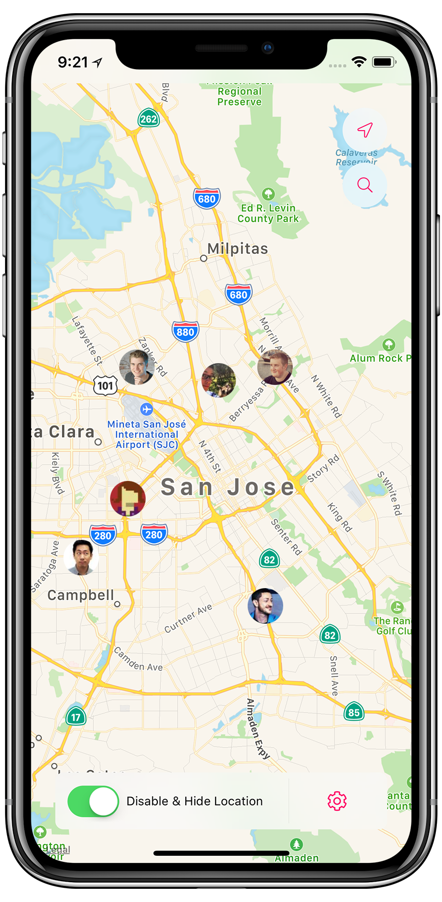

WWDC.family
An easy way to connect with fellow developers during WWDC.
Why?

WWDC week in San Francisco San Jose is exciting and overwhelming at the same time: so many iOS and Mac developers all in one city. You finally have the chance to meet all the people in person you interact with online usually.
By making a real-time map of all developers you'll be able to spontaneously meet nearby developers or join other groups.
How does it work
Apple limits the number of users in a location sharing group, as does line.here.
This year I decided to build a basic, open source solution to share our locations. I wanted to use this opportunity to learn and use all the latest tooling, including Firebase, React Native and fastlane. You can find the source code on GitHub.
Register
Register here and accept the TestFlight invite in your inbox you'll receive immediately.
Ideas
If you have any ideas, please get in touch with me on Twitter
Privacy
The app is completely open source on GitHub. You can always easily stop sharing your location using the radar emoji on the bottom right. If you want to be 100% sure, you can also disable location services for the wwdc.family app altogether in the settings app. By disabling location services, you immediately disappear from the map. All data is stored on Firebase.